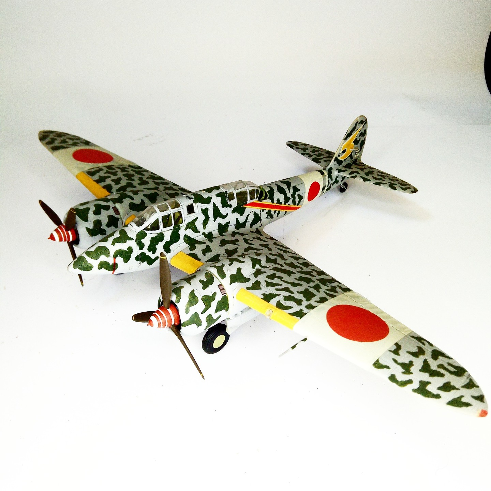

Aerei · scale model archive
Kawasaki Ki 45 kai hei Toryu Nick
Kawasaki Ki 45 kai hei Toryu Nick — Kit: Nichimo. Scale 1/48 Very nice subject and kit, I like the colorful livery #1/48 #Nichimo

Photo gallery
English description
Scale 1/48
Very nice subject and kit, I like the colorful livery
#1/48 #Nichimo
Descrizione italiana
Livrea Very nice subject e kit, I like il colorful.